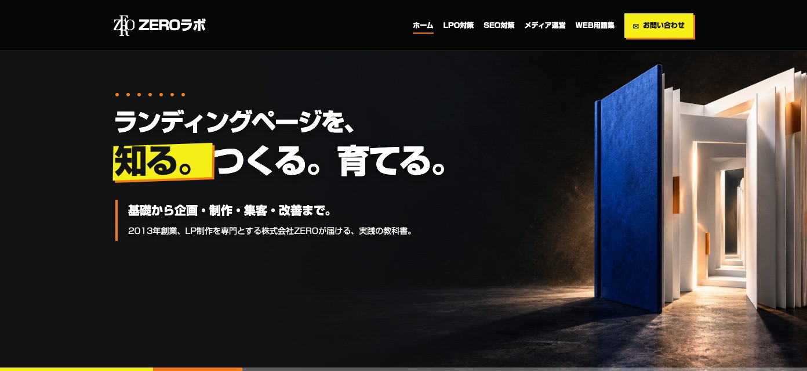
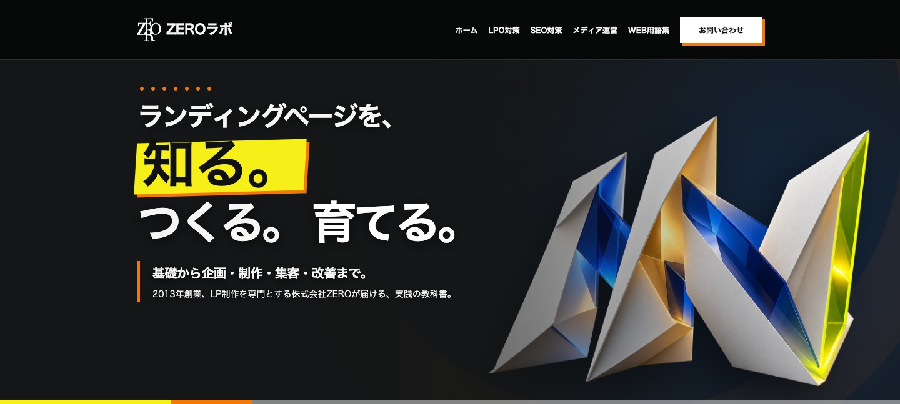
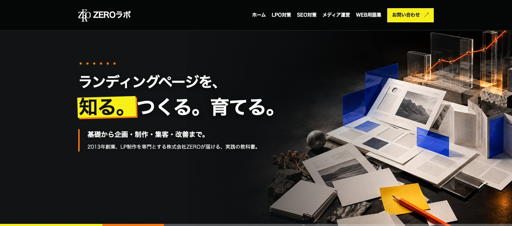

ZERO LABO / HEADER & MAIN VISUAL
各案を開くと、指定のナビゲーションとコピーを入れたPC・スマホ対応の見え方を確認できます。

立体的な紙と光で「教科書」の入口をつくり、コピーを強く見せる。

言葉のリズムと誌面の構成を主役にした、記憶に残る見せ方。

調べる・つくる・改善する流れを、一つのビジュアルで伝える。
比較用のデザインです。現在の本番サイトは変更していません。